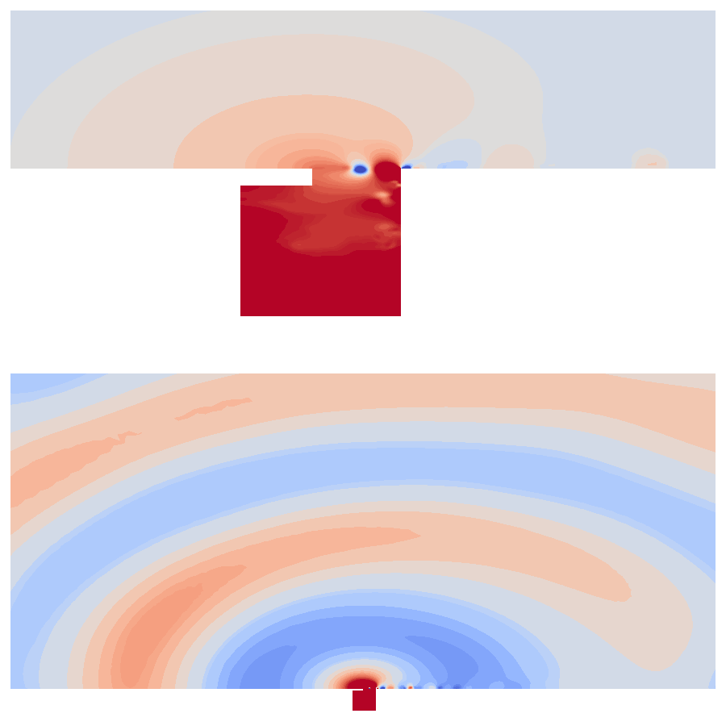
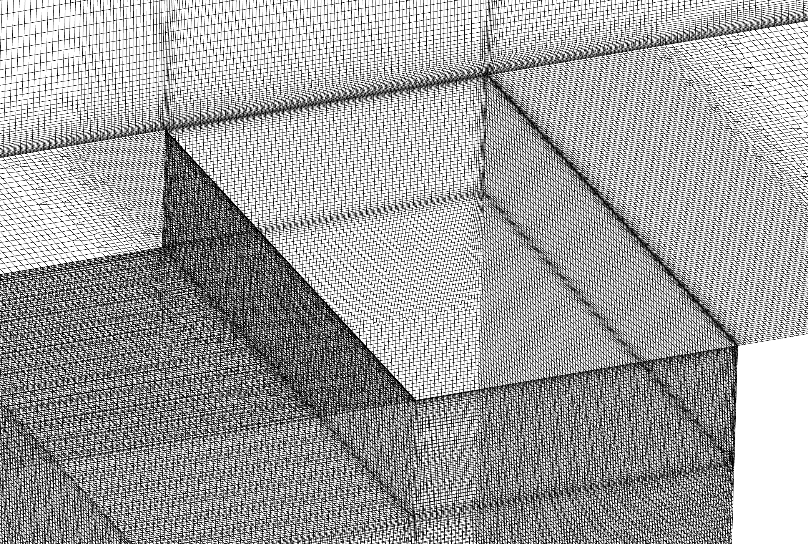

These are animations showcasing the aeroacoustic feedback mechanism occuring at an automotive cavity while using a hybrid Stress-blended eddy simulation (SBES) approach.
The first animation below shows the vorticity field ω with added velocity field vectors. Here periodic vortex shedding, as well as the impact on the downstream edge can be observed.
The second animation shows the corresponding pressure field p. Higher relative velocities inside the individual vortices cause a drop in the pressure field. This together with the impact on the rear wall also induces pressure fluctuations inside the body of the cavity.

The pressure fluctuations inside the cavity lead to emission of acoustic waves into the simulation domain as can be seen in the following animations.
The following image shows the mesh used for the simulation.
